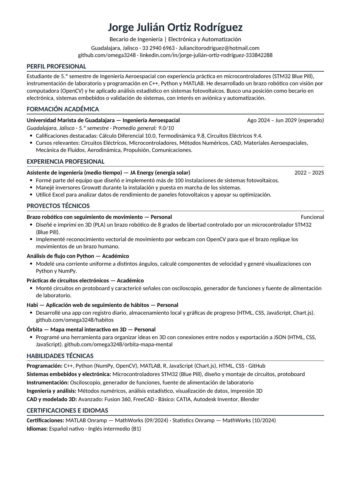

Mi currículum
Becario de Ingeniería | Electrónica y Automatización

Descarga el CV en PDF para consultar el documento completo.
Este botón descarga el documento original. También puedes abrir el PDF en otra pestaña.
Becario de Ingeniería | Electrónica y Automatización

Descarga el CV en PDF para consultar el documento completo.